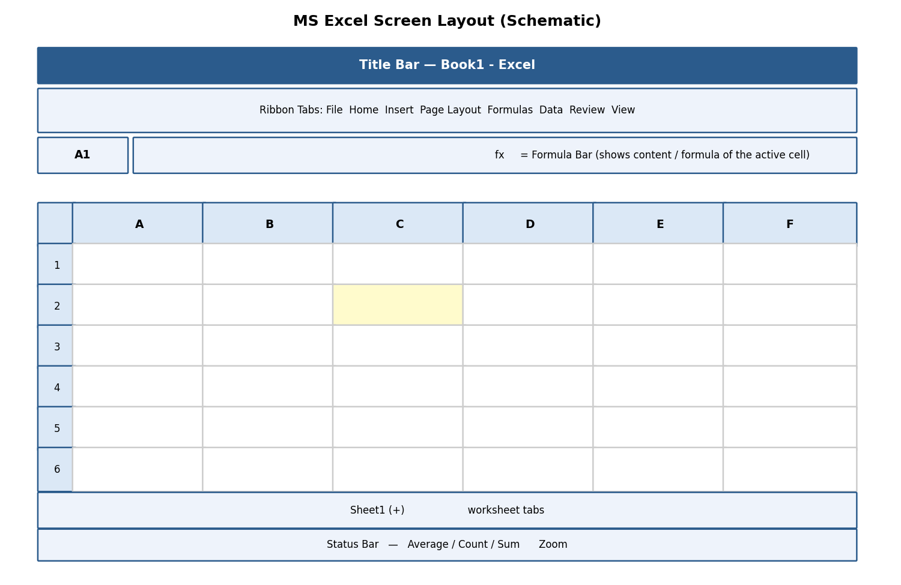

Chapter 2: MS Excel Lab¶
अध्याय 2: एमएस-एक्सेल
2.1 Introduction to the Excel Environment¶
Microsoft Excel is an Electronic Spreadsheet program — software that stores and processes data arranged in a grid of rows and columns, allowing automatic calculation, analysis, and visualisation of numeric information.
माइक्रोसॉफ्ट एक्सेल एक इलेक्ट्रॉनिक स्प्रेडशीट प्रोग्राम है, जो पंक्तियों (rows) व स्तंभों (columns) की ग्रिड में डेटा संग्रहीत तथा संसाधित करता है, जिससे स्वचालित गणना, विश्लेषण व दृश्यांकन (visualisation) संभव होता है।

Fig 2.1 — Schematic layout of the MS Excel screen
-
Workbook — the entire Excel file (extension .xlsx); a single workbook can contain many worksheets.
-
Worksheet (Sheet) — one page/tab within a workbook, made up of the row-column grid; sheet tabs appear at the bottom, and new sheets are added via the '+' icon.
-
Rows — numbered 1, 2, 3 … running horizontally (a worksheet has 1,048,576 rows).
-
Columns — lettered A, B, C … Z, AA, AB … running vertically (a worksheet has 16,384 columns, up to XFD).
-
Cell — the intersection of a row and column, e.g., cell 'B5' is at the intersection of column B and row 5. Every cell has a unique Cell Address / Cell Reference.
-
Name Box — top-left box showing the address of the currently active cell (or a chosen name).
-
Formula Bar — displays the actual content (text, number, or formula) typed into the active cell, even if the cell itself displays a calculated result.
-
Naming Cells (Formulas tab → Define Name, or type directly in the Name Box): assigns a memorable name (e.g., 'TaxRate') to a cell/range so formulas can refer to 'TaxRate' instead of '\$B\$2', improving readability.
2.1.1 Navigating and Selecting Items, Entering Data¶
-
Navigate with the arrow keys, mouse click, or by typing a cell address into the Name Box and pressing Enter (e.g., type 'H25' to jump straight there).
-
Ctrl+Home jumps to cell A1; Ctrl+End jumps to the last used cell.
-
Select a range by clicking a cell and dragging, or clicking the first cell then Shift+clicking the last cell of a rectangular range (e.g., A1:D10).
-
Select an entire row/column by clicking its row number/column letter heading; select the whole sheet with Ctrl+A or the small triangle at the top-left corner of the grid.
-
Enter data: click a cell, type the value, and press Enter (moves down), Tab (moves right), or an arrow key to confirm and move to the neighbouring cell.
-
Excel auto-detects the data type: numbers align right, text aligns left, and dates are recognised and can be used in date arithmetic.
✎ Exercise 2.1 (Practice / अभ्यास)
- Open a new workbook, rename Sheet1 to 'Marksheet', and enter a small table with headers Roll No, Name, Physics, Chemistry, Maths in row 1 for 5 students.
2.2 Creating and Saving the Excel Workbook¶
New, Open, Close, Save, and Save As work exactly as described in Chapter 0 — the default Excel format is Excel Workbook (*.xlsx); use Save As → CSV (Comma delimited) to export plain tabular data for use in other software.
2.3 Formatting Text and Cells¶
| Command | Location | Purpose |
|---|---|---|
| Font Size / Style / Colour, Bold, Italic, Underline | Home tab → Font group | Same as Word — controls the appearance of cell content. |
| Wrap Text | Home tab → Alignment group | Displays long text on multiple lines within one cell instead of spilling into neighbouring cells or being cut off. |
| Merge & Centre | Home tab → Alignment group | Combines selected cells into one larger cell and centres the content — typically used for a table title spanning several columns. |
| Number Format | Home tab → Number group | Changes how a value is displayed: Currency (₹1,234.00), Accounting, Percentage, Date, Time, Fraction, Scientific — WITHOUT changing the underlying stored value. |
| Borders / Fill Colour | Home tab → Font group icons | Adds gridlines around cells or a background colour, useful for highlighting totals or headers. |
-
Formatting Rows, Columns & Cells: right-click a row/column header → Row Height / Column Width to set an exact size, or double-click the boundary to AutoFit to content.
-
Cutting, Copying, Pasting, Paste Special: Ctrl+X / Ctrl+C / Ctrl+V work as in Word; Paste Special (Ctrl+Alt+V) offers advanced options such as pasting only Values (result, not formula), only Formats, or Transpose (convert a row of data into a column, or vice-versa).
-
Inserting and Deleting: right-click a row/column/cell → Insert or Delete to add or remove it, shifting neighbouring cells accordingly.
-
Importing and Exporting Data: Data tab → Get Data / From Text-CSV imports external data; Save As → CSV exports the current sheet to a plain-text comma-separated file readable by almost any software.
-
Adding and Editing Borders, Headers and Footers: Page Layout tab → Print Titles, or Insert tab → Header & Footer (switches to Page Layout view) to add repeating headers/footers on printed pages.
-
Worksheet Management: right-click a sheet tab for Insert, Delete, Rename, Move or Copy, Tab Colour, and Hide/Unhide options — useful for comparing or reorganising multiple related sheets (e.g., 'Jan', 'Feb', 'Mar' sales sheets).
-
Conditional Formatting (Home tab → Conditional Formatting): automatically applies formatting (colour, icon, data bar) to cells that meet a rule, e.g., highlight all marks below 40 in red to flag failing students.
-
Linking Excel Data: typing '=Sheet2!A1' in one cell displays the live value from another sheet/cell — updates automatically if the source changes; data can even be linked across workbooks.
-
Freezing/Hiding Rows/Columns (View tab → Freeze Panes): keeps header rows/columns visible on screen while scrolling through a very long/wide sheet; Hide temporarily removes a row/column from view without deleting its data.
-
Find and Replace (Ctrl+F / Ctrl+H): same function as in Word, but can also search within formulas or specific value types.
-
Undo (Ctrl+Z) / Redo (Ctrl+Y): reverse or reapply the most recent action(s) — Excel keeps a history of many recent steps.
✎ Exercise 2.3 (Practice / अभ्यास)
- In the Marksheet from Exercise 2.1, apply Currency-style formatting is not needed, but apply Bold+Fill Colour to the header row, use Merge & Centre for a title 'Semester Marksheet' across all columns, and apply Conditional Formatting to highlight any mark below 33 in red.
2.4 Performing Calculations with Formulas and Functions¶
A Formula is a user-defined calculation that always begins with an equals sign (=), e.g., =B2+C2. A Function is a predefined, ready-made formula provided by Excel that performs a specific calculation, e.g., =SUM(B2:B10).
-
Creating a Simple Formula: click the target cell, type '=', click/type the first cell reference, type an operator (+, -, *, /), click/type the next reference, then press Enter. Example: =B2+C2+D2 adds three cell values.
-
Setting up your Own Formula: combine operators, parentheses for precedence, and multiple cell references or functions in a single expression, e.g., =(B2+C2+D2)/3 to compute an average manually.
-
Copying a formula down/across a range instantly recalculates it for each row/column by adjusting relative references (see Section 2.5).
2.4.1 Date and Time Functions¶
| Function | Example | Result / Purpose |
|---|---|---|
| TODAY() | =TODAY() | Returns the current date; updates automatically each day the file is opened. |
| NOW() | =NOW() | Returns the current date AND time. |
| DATE(y,m,d) | =DATE(2026,7,22) | Builds a date from separate year, month, day numbers. |
| DATEDIF(start,end,unit) | =DATEDIF(A1,B1,"D") | Calculates the difference between two dates in days ("D"), months ("M"), or years ("Y") — useful for age or tenure calculation. |
2.4.2 Relative and Absolute Cell Referencing¶

Fig 2.2 — Relative vs Absolute referencing
This is one of the most important concepts in spreadsheet work:
-
Relative Reference (e.g., A1): when a formula containing A1 is copied to another cell, the reference automatically adjusts based on the new position — ideal for repeating the same type of calculation down many rows (e.g., Total = Price × Quantity for every row).
-
Absolute Reference (e.g., \$A\$1): the dollar signs 'lock' the column and row so the reference does NOT change when the formula is copied — essential when every row must refer to one fixed value, such as a single tax rate or exchange rate cell.
-
Mixed Reference (e.g., \$A1 or A\$1): locks only the column OR only the row, letting the formula adjust in one direction while staying fixed in the other.
-
Press F4 immediately after typing/clicking a cell reference to cycle through A1 → \$A\$1 → A\$1 → \$A1 → back to A1.
Example: If cell E2 contains the formula =C2*\$F\$1 (where F1 holds a fixed GST rate of 18%), copying E2 down to E3, E4… will correctly change C2 to C3, C4… while \$F\$1 always stays fixed at F1.
रिलेटिव रेफरेंस कॉपी करने पर बदल जाता है, जबकि एब्सोल्यूट रेफरेंस (\$ चिन्ह के साथ) स्थिर रहता है। यह अवधारणा तब आवश्यक होती है जब किसी एक निश्चित मान (जैसे टैक्स दर) को कई पंक्तियों में संदर्भित करना हो।
2.4.3 Introduction to In-Built Functions¶
| Category | Function(s) | Example & Purpose |
|---|---|---|
| Statistical/Conditional | SUMIF, COUNTIF, COUNTA | =SUMIF(B2:B20,">=40") adds only marks ≥ 40; =COUNTIF(B2:B20,"Pass") counts cells containing 'Pass'; =COUNTA(A2:A20) counts all non-blank cells (text or number). |
| Financial | PMT, FV, PV | =PMT(rate,nper,pv) calculates the fixed periodic payment for a loan given interest rate, number of periods, and present value. |
| Logical | IF, AND, OR, NOT | =IF(B2>=40,"Pass","Fail") displays 'Pass' or 'Fail' based on a condition; AND/OR combine multiple conditions. |
| Lookup & Reference | VLOOKUP, HLOOKUP, INDEX, MATCH | =VLOOKUP(lookup_value, table_array, col_index, FALSE) searches a value in the FIRST COLUMN of a table and returns a value from a specified column in the same row. |
| Mathematical | SUM, ROUND, ABS, SQRT, POWER | =SUM(B2:B10) totals a range; =ROUND(A1,2) rounds to 2 decimal places. |
| Statistical | AVERAGE, MAX, MIN, MEDIAN, STDEV | =AVERAGE(B2:B10) calculates the mean; =MAX/MIN find the highest/lowest value. |
| Text | LEFT, RIGHT, MID, CONCATENATE/TEXTJOIN, UPPER, LOWER, TRIM | =CONCATENATE(A2," ",B2) joins first and last names with a space; =LEFT(A2,3) extracts the first 3 characters. |
| Database | DSUM, DAVERAGE, DCOUNT | Perform SUM/AVERAGE/COUNT on a table that meets multiple criteria, similar to a simple database query. |
Worked Example — VLOOKUP: Suppose a 'Rate Table' on Sheet2 lists Product Code and Price. In Sheet1, =VLOOKUP(A2, Sheet2!\$A\$2:\$B\$10, 2, FALSE) looks up the product code in A2 within Sheet2's table and returns the matching price from the 2nd column — the last argument FALSE requests an EXACT match.
इन-बिल्ट फ़ंक्शन पहले से तैयार गणनाएँ हैं — जैसे SUMIF/COUNTIF सशर्त योग व गणना करते हैं, IF तार्किक निर्णय देता है, तथा VLOOKUP/HLOOKUP किसी तालिका में मान खोजकर संबंधित परिणाम लौटाते हैं।
✎ Exercise 2.4 (Practice / अभ्यास)
-
In the Marksheet, add a 'Total' column using SUM, a 'Percentage' column using a formula dividing by total maximum marks, and a 'Result' column using IF that shows 'Pass' if percentage ≥ 33, else 'Fail'.
-
Create a small 'Rate Table' of 5 items with Item Code and Price on a second sheet, then use VLOOKUP on the first sheet to fetch prices for a bill of 3 items.
-
Use TODAY() and DATEDIF to calculate your age in years from your date of birth.
2.5 Sorting and Filtering Data¶
-
Sort (Data tab → Sort, or the A→Z / Z→A buttons): arranges rows in ascending or descending order based on one or more chosen columns (e.g., sort a marksheet by Percentage, highest first).
-
Filter (Data tab → Filter, or Ctrl+Shift+L): adds drop-down arrows to each header cell, letting you temporarily display only rows meeting chosen criteria.
-
Number Filter: filters based on numeric conditions (Greater Than, Between, Top 10, etc.).
-
Text Filter: filters based on text conditions (Equals, Contains, Begins With, etc.).
-
Custom Filtering: combines two conditions with AND/OR logic, e.g., show rows where Marks > 60 AND Subject = 'Physics'.
-
Removing Filters: click Filter again to remove the drop-down arrows and show all rows; or click 'Clear' under the Filter drop-down to remove just one column's filter.
-
Conditional Formatting (also covered in 2.3): visually flags data meeting a rule while Sort/Filter physically re-order or hide rows.
-
Creating Sub-Totals (Data tab → Subtotal): automatically groups data by a chosen column and inserts SUM/AVERAGE/COUNT sub-total rows for each group (requires the data to be sorted by that column first).
-
Pivot Tables (Insert tab → PivotTable): an interactive summary tool that lets you drag-and-drop fields into Rows, Columns, Values, and Filters areas to instantly summarise large datasets — e.g., total sales by Region and by Month — without writing any formula.
✎ Exercise 2.5 (Practice / अभ्यास)
- Sort the Marksheet in descending order of Percentage. Apply a Text Filter to show only students whose Name begins with a chosen letter. Then create a Pivot Table summarising average marks by Subject (if subjects were entered per row instead of per column, restructure a copy of the data accordingly).
2.6 Creating and Formatting Charts¶

Fig 2.3 — Common chart types and their purpose
-
Select the data range (including headers) that you want to chart.
-
Go to Insert tab → Charts group → choose a chart type: Column, Bar, Line, Pie, etc. (or click Recommended Charts for Excel's suggestion).
-
Once inserted, the contextual Chart Design and Format tabs appear.
-
Chart Design tab: Add Chart Element (title, axis titles, data labels, gridlines, legend), Change Colours, and choose a Chart Style.
-
Format tab: fine-tune individual elements' fill colour, outline, and text effects by selecting them and using Format Selection.
-
Editing the Chart Data Range: click the chart → Chart Design → Select Data to add/remove a data series or change the cell range being plotted.
-
Editing a Data Series: within Select Data, click Edit next to a series to change its name or the values it plots.
-
Changing the Chart Type: right-click the chart → Change Chart Type to switch, e.g., from a Column chart to a Line chart, without re-entering data.
-
Creating Tables in Excel (Insert tab → Table, or Ctrl+T): converts a plain data range into a structured 'Excel Table' with automatic banded rows, a filter-enabled header, and automatically expanding formulas/formatting as new rows are added.
Choosing the right chart: use a Column/Bar chart to compare values across categories; a Line chart to show a trend over time; a Pie chart to show the proportion of parts to a whole (best with ≤6 categories).
✎ Exercise 2.6 (Practice / अभ्यास)
- Using the Marksheet, create a Column chart comparing each student's Total marks, with a proper Chart Title and axis titles. Then create a Pie chart showing the proportion of Pass vs Fail students.
2.7 Advanced List Management¶
-
INDEX and MATCH: a more flexible alternative to VLOOKUP. MATCH(lookup_value, lookup_array, 0) finds the POSITION of a value within a range; INDEX(array, row_num) then returns the value at that position. Combined as =INDEX(B2:B10, MATCH(A2, C2:C10, 0)), this can look leftward (unlike VLOOKUP) and is more robust when columns are inserted or reordered.
-
Drawing & Picture Objects in Excel: Insert tab → Shapes/Pictures work exactly as in Word, useful for adding a company logo to a report or callouts to a chart.
-
Forms and Form Controls in Excel (Developer tab → Insert → Form Controls): adds interactive controls such as Check Boxes, Option (Radio) Buttons, Combo Boxes/Drop-down Lists, and Spin Buttons directly onto a worksheet — useful for building simple data-entry forms or interactive dashboards; each control can be linked to a specific cell to record its value.
2.8 Proofing and Printing a Spreadsheet¶
-
Page Setup (Page Layout tab → Page Setup group): configure Margins, Orientation (Portrait/Landscape — Landscape suits wide tables), Size, and Print Area.
-
Setting Print Area (Page Layout → Print Area → Set Print Area): restricts printing to only the selected range instead of the entire used area of the sheet.
-
Print Titles (Page Layout → Print Titles): repeats chosen header row(s)/column(s) on every printed page — essential for long tables spanning multiple pages.
-
Inserting Column/Page Header and Footer, and objects within them: same concept as Word — switch to Page Layout view (View tab) to add a header/footer directly, including page numbers, file name, or a logo picture.
-
Print Preview (File → Print): shows exactly how the printed pages will look, including page breaks (visible as dashed blue lines in Normal view, or solid lines in Page Break Preview under the View tab).
-
Enable Background Error Checking (File → Options → Formulas): Excel continuously scans for common formula errors (like #DIV/0! or inconsistent formulas) and flags the cell with a small green triangle.
-
Setting AutoCorrect Options: same dialog as Word (File → Options → Proofing) for automatic typo correction while typing in cells.
✎ Exercise 2.8 (Practice / अभ्यास)
- Set the Print Area to just the Marksheet table, set the header row to repeat via Print Titles, switch to Landscape orientation, and preview the printout using Print Preview.
2.9 Making Spreadsheets Attractive, Useful and Easy¶
-
Freeze the header row so column titles remain visible while scrolling through long data.
-
Use Conditional Formatting sparingly (2-3 rules) to draw attention to what matters (e.g., red for below-target, green for above-target) rather than colouring everything.
-
Keep raw data on one sheet and build charts/pivot tables on a separate 'Dashboard' sheet referencing it, so the summary view stays clean.
-
Use named ranges (e.g., 'TaxRate') instead of bare cell references in important formulas, making them self-documenting.
-
Protect important cells/sheets (Review tab → Protect Sheet) containing formulas, so they are not accidentally overwritten by other users.
2.10 Worked Walkthrough: Building a Complete Student Gradebook¶
This walkthrough combines many Excel skills into one realistic, end-to-end task.
-
In a new workbook, rename Sheet1 to 'Gradebook'. In row 1, type headers: Roll No, Name, Test1 (20), Test2 (20), Assignment (10), Total (50), Percentage, Grade.
-
Enter data for at least 10 students in rows 2-11.
-
In the Total column, enter =SUM(C2:E2) and copy it down for all students (the relative reference automatically adjusts each row).
-
In the Percentage column, enter =(F2/50)*100 and format the column using the Percentage or a custom Number format showing one decimal place.
-
In the Grade column, enter a nested IF,
e.g. =IF(G2>=75,"A",IF(G2>=60,"B",IF(G2>=40,"C","F"))), and copy down.
-
Apply Conditional Formatting to the Grade column: highlight all 'F' grades in red fill.
-
Freeze the top row (View tab → Freeze Panes → Freeze Top Row) so headers remain visible while scrolling.
-
Sort the data by Percentage in descending order (Data tab → Sort) to identify the class topper instantly.
-
Insert a Column Chart comparing every student's Total marks, with a proper chart title.
-
Use =COUNTIF(H2:H11,"F") in a summary cell to count how many students have failed, and =AVERAGE(G2:G11) to find the class average percentage.
-
Set the Print Area to the data table, apply Print Titles so the header row repeats on every printed page, and preview before printing.
-
Save the workbook as 'Gradebook_\<ClassName>.xlsx'.
Notice how this single exercise uses formulas, functions, conditional formatting, sorting, charts, and printing together — this integrated approach mirrors how Excel is actually used in real academic and office settings, rather than each feature being used in isolation.
यह अभ्यास सूत्रों (formulas), फ़ंक्शनों, सशर्त फॉर्मेटिंग, सॉर्टिंग, चार्ट तथा प्रिंटिंग को एक साथ जोड़ता है — यही एकीकृत दृष्टिकोण वास्तविक कार्यालयी व शैक्षणिक उपयोग में एक्सेल के उपयोग को दर्शाता है।
✎ Exercise 2.10 (Practice / अभ्यास)
- Build your own Gradebook following the walkthrough above using your actual class's subjects and at least 10 real or representative student records.
2.11 Applications of MS Excel¶
-
Academic record-keeping: mark sheets, attendance registers, result analysis.
-
Finance and accounting: budgets, invoices, loan/EMI calculators, ledgers.
-
Business analytics: sales dashboards, inventory tracking, pivot-table based reporting.
-
Scientific/statistical data analysis: tabulating experimental readings and computing averages, standard deviation, trends.
-
Scheduling and planning: timetables, project Gantt-style charts, event budgets.
2.12 Limitations of MS Excel¶
-
Not a true relational database — handling extremely large datasets (hundreds of thousands of rows with complex relationships) is better done in Access/SQL.
-
Formula errors can silently propagate through a worksheet if not carefully audited (Formulas tab → Error Checking / Trace Precedents helps).
-
Multiple users editing the same local file simultaneously can cause conflicts unless using a shared cloud workbook (co-authoring via OneDrive).
-
Complex nested formulas can become difficult to read/maintain — thorough documentation (comments, named ranges) is essential.
-
Charts and pivot tables need the source data to be 'clean' (no blank rows, consistent headers) — messy data produces misleading results.